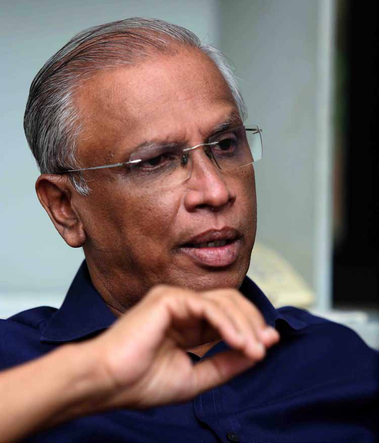
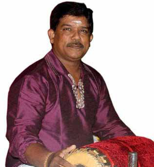

"I Now Question Our Decision to Decline Ministerial Posts During Sirisena's Government"
"I Now Question Our Decision to Decline Ministerial Posts During Sirisena's Government"
Jaffna Monitor hellojaffnamonitor@gmail.com 24 From the Ilankai Tamil Arasu Kachchi (ITAK), I believe you are one of the few parliamentarians who openly criticize the misdeeds of the LTTE while still continuing to do so. How did you find the courage to speak up? There's no special courage in speaking the truth. It's my commitment to it that drives me. I've always believed that truth has its own power. When Galileo said the Earth revolved around the sun, they tried to silence him, but did that change the truth? The same applies here. The truth doesn't change because it's uncomfortable or unpopular at the time. "I Now Question Our Decision to Decline Ministerial Posts During Sirisena's Government" Interview BY: Our Special Correspondent - Sumanthiran Part-2
Jaffna Monitor hellojaffnamonitor@gmail.com 25 Let me be clear: I don't criticize the LTTE as a whole, but I do address their specific wrongs. This isn't like the famous Vadivelu joke — 'If it happens to you, it's blood; if it happens to me, it's just tomato chutney.' A section of LTTE supporters think that way. When the Tigers stormed a mosque in Kattankudy and killed innocent people while they prayed, can we claim it wasn't real blood spilled, just tomato chutney? No. Wrong is wrong. Pointing out those wrongs isn't an attack on them; it's an acknowledgement of facts. If we want the world to stand with us, we must also have the courage to stand by the truth. We, Tamils, often expect the international community to raise their voice for us, but how can we expect that if we refuse to face our own mistakes? We accuse the Sri Lankan government of war crimes based on international reports, and those very reports say that both sides were guilty of violations. Yet, some only want to cherry-pick the parts that suit their narrative, ignoring the rest. It doesn't work like that. At the same time, I've always said we must honour the sacrifices of the LTTE fighters, those who gave their lives for our people. But that honour should come from a place of justice, not from covering up mistakes. In the last election, even my own party members campaigned against me, accusing me of being "anti-Tamil nationalism." I spoke at over 500 meetings during the campaign, and at every single one, people asked, "Are you against the liberation struggle?" I gave them the same answer every time: "I do not believe in armed conflict. If you want someone who supports violence, don't vote for me." And yet, I won. Many so-called "staunch Tamil nationalists" lost. Why? Because the people are smarter than we give them credit for. They're tired of the old narratives. They want leaders who stand for the truth, not for myths and glorified half-truths. I'm not afraid of losing while standing for the truth. The people see it, and that's what matters. By criticizing the LTTE, aren't you worried about being labelled a traitor? No, I'm not worried because I'm not a traitor. I've addressed this in party meetings as well— those who call me a traitor do so out of fear. And frankly, their fear is justified. Many of them were the ones who acted as informants, pointing out people to the authorities at every opportunity. I never engaged in such activities, so I have no reason to be afraid of their labels. When the LTTE was targeting EPRLF members, I was one of the people who stepped up to shelter those who managed to escape. I personally ensured they were safely transported to Colombo, where they found refuge at Colombo Hindu College. So, if standing by what's right makes me a traitor in their eyes, then so be it. I know my conscience is clear. The LTTE had a powerful military presence, so why do you think they eventually fell? What do you believe were the reasons behind their downfall? Were there internal factors at play? The late Mr Sampanthan often noted, even in Parliament, that the LTTE didn't allow space for human rights or democracy—a point some criticized but held true. As a militant group, they couldn't create room for democratic processes; had they done so, they wouldn't have functioned as such.
Jaffna Monitor hellojaffnamonitor@gmail.com 26 It's important to remember that the suffering of our people pushed the Tigers into rebellion. Their rise wasn't without cause. However, where the LTTE went wrong was in inflicting the same suffering on other communities. It wasn't enough for them to declare themselves against the Sinhalese; they needed to back this up with their actions. Targeting innocent Sinhalese civilians with bombings only alienated them further. And similarly, the LTTE's actions against the Muslim community—killing Muslims or expelling them from the North in a single day and seizing their properties—were grave mistakes. As a community that had endured immense pain and suffering, we shouldn't have allowed the same suffering to be inflicted on others. If the LTTE had avoided these atrocities, there's a chance that the Sinhalese community might have viewed them as a committed and principled military force. Had they been more careful not to harm innocent civilians and made it clear that their struggle was purely for justice and rights, it could have fostered a different perception among the Sinhalese. In some alternate reality, things might have turned out differently if these mistakes hadn't been made. What is your opinion on the forced recruitment conducted by the LTTE during the final stages of the war? This is well-documented in UN reports. If we're calling for an international investigation into the final stages of the war, then the actions of the LTTE must also be scrutinized. It would be unreasonable to demand an investigation into the Sri Lankan government's actions while exempting the LTTE. That stance simply doesn't hold up. The whole purpose of an international investigation is to ensure impartiality. If we truly seek justice, we can't expect investigators to turn a blind eye to our own misdeeds while focusing solely on the other side's faults. That doesn't make any sense. For example, we accuse the Sri Lankan government of directing civilians into so- called "no-fire zones" and then shelling those areas. There's evidence to support this, and it occurred on three separate occasions. We argue that these actions must be investigated and those responsible held accountable. But to then claim that the LTTE's crimes, like forced recruitment, should not be investigated would be absurd. If we're demanding justice, it must be justice for all. The LTTE's act of forced recruitment was wrong, wasn't it? If it happened as documented in the UN reports, then yes, it was undoubtedly a serious wrongdoing. In that case, why did you represent Kannadasan—a prominent LTTE member and a war criminal accused of forcibly recruiting more than 500 innocent children, dragging them into war? Hundreds of innocent children, some as young as 10, died because of him. A former UN employee even gave us an extensive interview detailing his war crimes. I assume you've read it? How could you stand in defence of such a man in court? That case was tied to a specific incident of
Jaffna Monitor hellojaffnamonitor@gmail.com 27 forced recruitment. But as a lawyer, my duty is not to decide who deserves a defence and who doesn't. The law only works if every person, no matter how severe their alleged crimes, has the right to representation. If lawyers start refusing cases based on who the person is or what they're accused of, the entire system breaks down. My role was to ensure the system functions as it should and to let justice prevail by giving everyone their day in court. Without that, we lose the very foundation of justice. But was it really necessary for Kannadasan


Jaffna Monitor hellojaffnamonitor@gmail.com 28 you—an influential lawyer—to represent him directly? Defending someone like Kannadasan, accused of abducting over 500 innocent children for war, is no different from those so-called Tamil nationalist lawyers who defend drug dealers. How could you choose to protect someone like that? In the case against Kannadasan, there was no evidence to prove that he was physically present where the alleged crime occurred. As a lawyer, my role is not to pass judgment but to ensure that the legal process is followed and that the rights of the accused are respected. Some people accuse you of not taking up enough cases related to the rights of the Tamil people. What is your response to that? Who represented the landmark case on land rights? Who led the legal battle and won when Sampur was leased to a foreign company for 250 years? It was me. Has anyone else taken real, meaningful action to ensure the release of Tamil lands? One of the most critical cases I handled was defending our party's advocacy for federalism, which was challenged as a violation of the 6th Amendment. I successfully argued the case, and the court upheld our right to stand for federalism. In 2007-08, when the pass system was unfairly imposed in Vavuniya, I took it to court and won. That victory was a landmark. Similarly, in 2007, when Gotabaya Rajapaksa forcibly evicted people staying in lodges in Colombo overnight, I fought the case in court and won. So, to those who claim I haven't taken up enough Tamil rights cases, I ask—who else has fought and won these significant battles for our people? What are the significant cases you're working on currently? At present, I'm handling the case concerning Kurunthur Malai. I also recently won the case related to Vedukkunari Malai. In addition, I am managing 2,176 cases pertaining to the High-Security Zone in Palaly. Many people focus on the cases I've won, but in reality, I've lost more cases than I've won. My former senior even nicknamed me the lawyer for lost causes. The issues faced by Eastern Tamils are said to be different from those of Northern Tamils, particularly around land disputes with the Muslim community. Do you have a specific agenda to address the distinct needs of Eastern Tamils? I fully agree. The challenges in the East are quite different, largely due to the unique ethnic composition of the region. Over the years, our population in the East has decreased, which has only added to the complexity of the situation. That's why we've had to take a different approach there, particularly regarding land disputes. These issues are far more pressing in the East compared to the North, and we're very conscious of that. We've tailored our strategies to address the distinct needs of Eastern Tamils, ensuring that their concerns are met in a way that truly reflects their reality. There are claims that, like ITAK MP Shanakiyan Rasamanickam and others, you're more focused on addressing the concerns of the Eastern